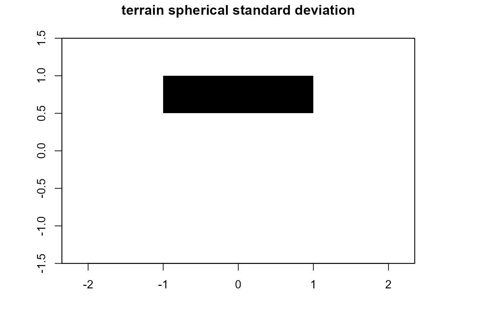

Derives the spherical standard deviation of a raster surface
spherical.sd(r, d, variance = FALSE, ...)
| r | Raster class object |
|---|---|
| d | Size of focal window or a matrix to use in focal function |
| variance | (FALSE|TRUE) Output spherical variance rather than standard deviation |
| ... | Additional arguments passed to calc (can write raster to disk here) |
rasterLayer class object of the spherical standard deviation
Surface variability using spherical variance/standard deviation. The variation can be assessed using the spherical standard deviation of the normal direction within a local neighborhood. This is found by expressing the normal directions on the surfaces cells in terms of their displacements in a Cartesian (x,y,z) coordinate system. Averaging the x-coordinates, y-coordinates, and z-coordinates separately gives a vector (xb, yb, zb) pointing in the direction of the average normal. This vector will be shorter when there is more variation of the normals and it will be longest--equal to unity--when there is no variation. Its squared length is (by the Pythagorean theorem) given by: R^2 = xb^2 + yb^2 + zb^2 where; x = cos(aspect) * sin(slope) and xb = nXn focal mean of x y = sin(aspect) * sin(slope) and yb = nXn focal mean of y z = cos(slope) and zb = nXn focal mean of z
The slope and aspect values are expected to be in radians. The value of (1 - R^2), which will lie between 0 and 1, is the spherical variance. and it's square root can be considered the spherical standard deviation.
Jeffrey S. Evans <jeffrey_evans<at>tnc.org>
# \donttest{ library(raster) data(elev) ssd <- spherical.sd(elev, d=5) slope <- terrain(elev, opt='slope') aspect <- terrain(elev, opt='aspect') hill <- hillShade(slope, aspect, 40, 270) plot(hill, col=grey(0:100/100), legend=FALSE, main='terrain spherical standard deviation')# }